Практика 1.2
Цель работы
Изучение ORM SQLModel и подключение FastAPI-приложения к PostgreSQL.
Подключение к базе данных
import os
from dotenv import load_dotenv
from sqlmodel import SQLModel, Session, create_engine
load_dotenv()
db_url = os.getenv("DB_ADMIN")
engine = create_engine(db_url, echo=True)
def init_db():
SQLModel.metadata.create_all(engine)
def get_session():
with Session(engine) as session:
yield session
Реализованные модели
One-to-many связи
class User(UserBase, table=True):
id: Optional[int] = Field(default=None, primary_key=True)
transactions: List["Transaction"] = Relationship(back_populates="user")
class Category(CategoryBase, table=True):
id: Optional[int] = Field(default=None, primary_key=True)
transactions: List["Transaction"] = Relationship(back_populates="category")
class Transaction(TransactionBase, table=True):
id: Optional[int] = Field(default=None, primary_key=True)
user: Optional[User] = Relationship(back_populates="transactions")
category: Optional[Category] = Relationship(back_populates="transactions")
Many-to-many связь
class TransactionTagLink(SQLModel, table=True):
transaction_id: Optional[int] = Field(
default=None, foreign_key="transaction.id", primary_key=True
)
tag_id: Optional[int] = Field(
default=None, foreign_key="tag.id", primary_key=True
)
note: Optional[str] = None
class Tag(TagBase, table=True):
id: Optional[int] = Field(default=None, primary_key=True)
transactions: List["Transaction"] = Relationship(
back_populates="tags",
link_model=TransactionTagLink
)
class Transaction(TransactionBase, table=True):
id: Optional[int] = Field(default=None, primary_key=True)
user: Optional[User] = Relationship(back_populates="transactions")
category: Optional[Category] = Relationship(back_populates="transactions")
tags: List[Tag] = Relationship(
back_populates="transactions",
link_model=TransactionTagLink
)
Вложенное отображение данных
Для отображения связанных объектов используется отдельная модель ответа.
class TransactionRead(TransactionBase):
id: int
class TransactionReadWithRelations(TransactionRead):
user: Optional[UserBase] = None
category: Optional[CategoryBase] = None
tags: List[TagBase] = []
@app.get("/transaction/{transaction_id}", response_model=TransactionReadWithRelations)
def transaction_get(transaction_id: int, session: Session = Depends(get_session)) -> Transaction:
transaction = session.get(Transaction, transaction_id)
if not transaction:
raise HTTPException(status_code=404, detail="Transaction not found")
return transaction
Реализованные методы API
Users
@app.get("/users_list")
def users_list(session: Session = Depends(get_session)) -> List[User]:
return session.exec(select(User)).all()
@app.get("/user/{user_id}")
def user_get(user_id: int, session: Session = Depends(get_session)) -> User:
user = session.get(User, user_id)
if not user:
raise HTTPException(status_code=404, detail="User not found")
return user
@app.post("/user")
def user_create(user: UserBase, session: Session = Depends(get_session)):
db_user = User.model_validate(user)
session.add(db_user)
session.commit()
session.refresh(db_user)
return {"status": 200, "data": db_user}
@app.patch("/user/{user_id}")
def user_update(user_id: int, user: UserBase, session: Session = Depends(get_session)) -> User:
db_user = session.get(User, user_id)
if not db_user:
raise HTTPException(status_code=404, detail="User not found")
user_data = user.model_dump(exclude_unset=True)
for key, value in user_data.items():
setattr(db_user, key, value)
session.add(db_user)
session.commit()
session.refresh(db_user)
return db_user
@app.delete("/user/{user_id}")
def user_delete(user_id: int, session: Session = Depends(get_session)):
user = session.get(User, user_id)
if not user:
raise HTTPException(status_code=404, detail="User not found")
session.delete(user)
session.commit()
return {"ok": True}
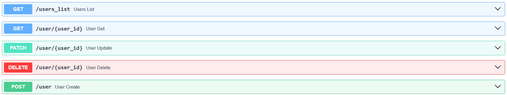
Categories
@app.get("/categories_list")
def categories_list(session: Session = Depends(get_session)) -> List[Category]:
return session.exec(select(Category)).all()
@app.get("/category/{category_id}")
def category_get(category_id: int, session: Session = Depends(get_session)) -> Category:
category = session.get(Category, category_id)
if not category:
raise HTTPException(status_code=404, detail="Category not found")
return category
@app.post("/category")
def category_create(category: CategoryBase, session: Session = Depends(get_session)):
db_category = Category.model_validate(category)
session.add(db_category)
session.commit()
session.refresh(db_category)
return {"status": 200, "data": db_category}
@app.patch("/category/{category_id}")
def category_update(category_id: int, category: CategoryBase, session: Session = Depends(get_session)) -> Category:
db_category = session.get(Category, category_id)
if not db_category:
raise HTTPException(status_code=404, detail="Category not found")
category_data = category.model_dump(exclude_unset=True)
for key, value in category_data.items():
setattr(db_category, key, value)
session.add(db_category)
session.commit()
session.refresh(db_category)
return db_category
@app.delete("/category/{category_id}")
def category_delete(category_id: int, session: Session = Depends(get_session)):
category = session.get(Category, category_id)
if not category:
raise HTTPException(status_code=404, detail="Category not found")
session.delete(category)
session.commit()
return {"ok": True}
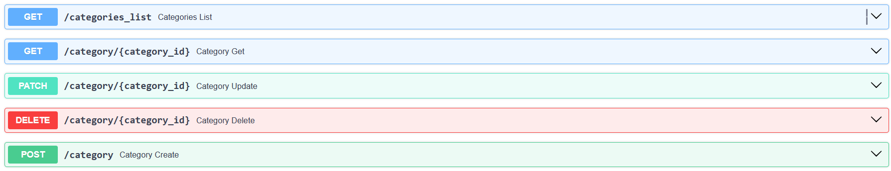
Tags
@app.get("/tags_list")
def tags_list(session: Session = Depends(get_session)) -> List[Tag]:
return session.exec(select(Tag)).all()
@app.get("/tag/{tag_id}")
def tag_get(tag_id: int, session: Session = Depends(get_session)) -> Tag:
tag = session.get(Tag, tag_id)
if not tag:
raise HTTPException(status_code=404, detail="Tag not found")
return tag
@app.post("/tag")
def tag_create(tag: TagBase, session: Session = Depends(get_session)):
db_tag = Tag.model_validate(tag)
session.add(db_tag)
session.commit()
session.refresh(db_tag)
return {"status": 200, "data": db_tag}
@app.patch("/tag/{tag_id}")
def tag_update(tag_id: int, tag: TagBase, session: Session = Depends(get_session)) -> Tag:
db_tag = session.get(Tag, tag_id)
if not db_tag:
raise HTTPException(status_code=404, detail="Tag not found")
tag_data = tag.model_dump(exclude_unset=True)
for key, value in tag_data.items():
setattr(db_tag, key, value)
session.add(db_tag)
session.commit()
session.refresh(db_tag)
return db_tag
@app.delete("/tag/{tag_id}")
def tag_delete(tag_id: int, session: Session = Depends(get_session)):
tag = session.get(Tag, tag_id)
if not tag:
raise HTTPException(status_code=404, detail="Tag not found")
session.delete(tag)
session.commit()
return {"ok": True}
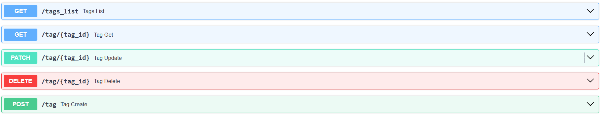
Transactions
@app.get("/transactions_list")
def transactions_list(session: Session = Depends(get_session)) -> List[Transaction]:
return session.exec(select(Transaction)).all()
@app.get("/transaction/{transaction_id}", response_model=TransactionReadWithRelations)
def transaction_get(transaction_id: int, session: Session = Depends(get_session)) -> Transaction:
transaction = session.get(Transaction, transaction_id)
if not transaction:
raise HTTPException(status_code=404, detail="Transaction not found")
return transaction
@app.post("/transaction")
def transaction_create(transaction: TransactionBase, session: Session = Depends(get_session)):
db_transaction = Transaction.model_validate(transaction)
session.add(db_transaction)
session.commit()
session.refresh(db_transaction)
return {"status": 200, "data": db_transaction}
@app.patch("/transaction/{transaction_id}")
def transaction_update(
transaction_id: int,
transaction: TransactionBase,
session: Session = Depends(get_session)
) -> Transaction:
db_transaction = session.get(Transaction, transaction_id)
if not db_transaction:
raise HTTPException(status_code=404, detail="Transaction not found")
transaction_data = transaction.model_dump(exclude_unset=True)
for key, value in transaction_data.items():
setattr(db_transaction, key, value)
session.add(db_transaction)
session.commit()
session.refresh(db_transaction)
return db_transaction
@app.delete("/transaction/{transaction_id}")
def transaction_delete(transaction_id: int, session: Session = Depends(get_session)):
transaction = session.get(Transaction, transaction_id)
if not transaction:
raise HTTPException(status_code=404, detail="Transaction not found")
session.delete(transaction)
session.commit()
return {"ok": True}
API для many-to-many связи
Для связи транзакций и тегов используется ассоциативная таблица TransactionTagLink.
@app.post("/transaction_tag_link")
def add_tag_to_transaction(link_data: TagLinkCreate, session: Session = Depends(get_session)):
transaction = session.get(Transaction, link_data.transaction_id)
tag = session.get(Tag, link_data.tag_id)
if not transaction:
raise HTTPException(status_code=404, detail="Transaction not found")
if not tag:
raise HTTPException(status_code=404, detail="Tag not found")
link = TransactionTagLink(
transaction_id=link_data.transaction_id,
tag_id=link_data.tag_id,
note=link_data.note
)
session.add(link)
session.commit()
return {"status": 200, "message": "Tag linked to transaction"}
@app.get("/transaction_tag_links")
def transaction_tag_links_list(session: Session = Depends(get_session)) -> List[TransactionTagLink]:
return session.exec(select(TransactionTagLink)).all()
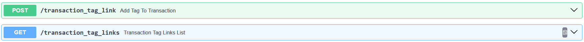
Итоговая база данных
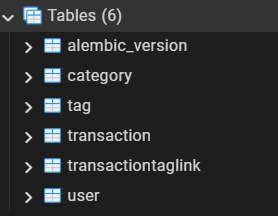
Пример добавления транзакции
Создаём пользователя
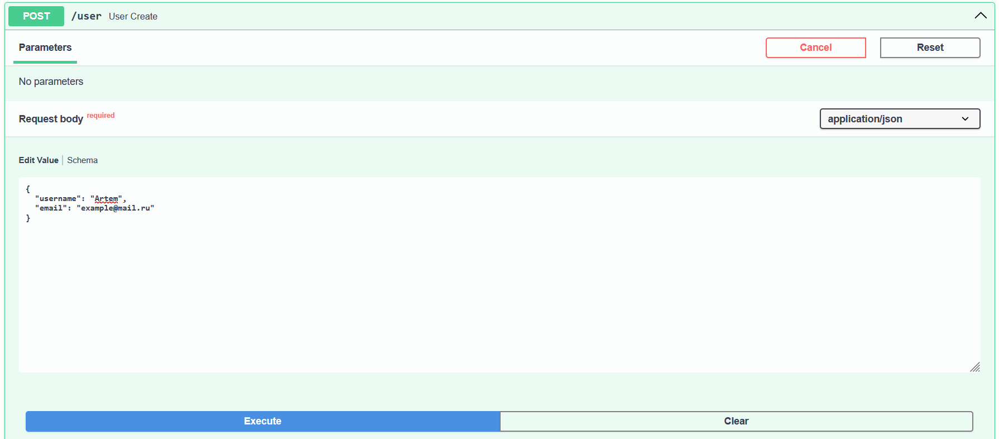
Создаём категорию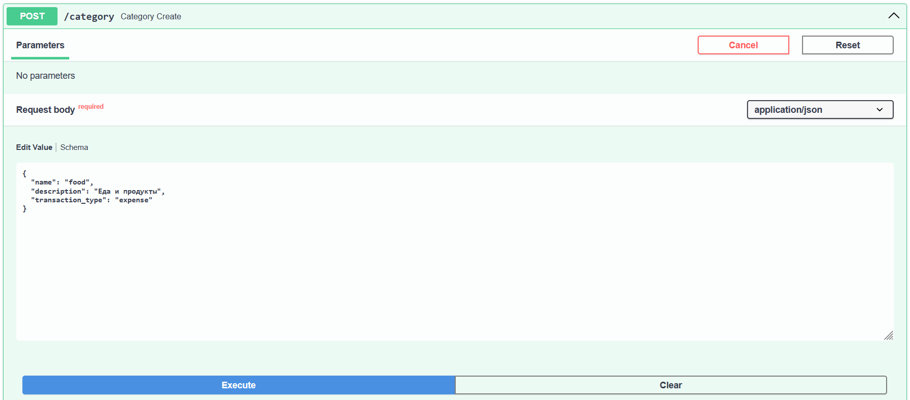
Создаём тэг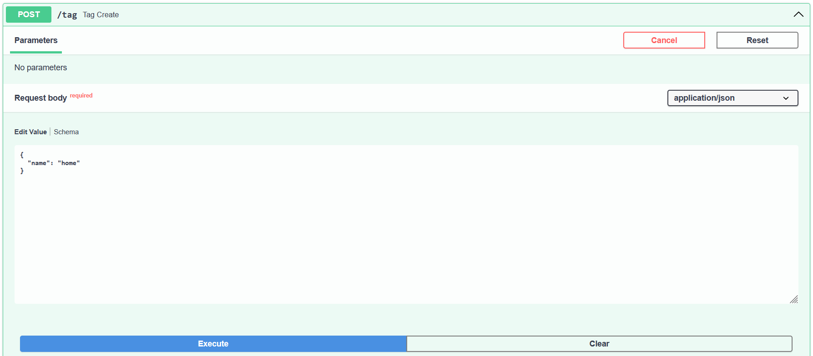
Создаём транзакцию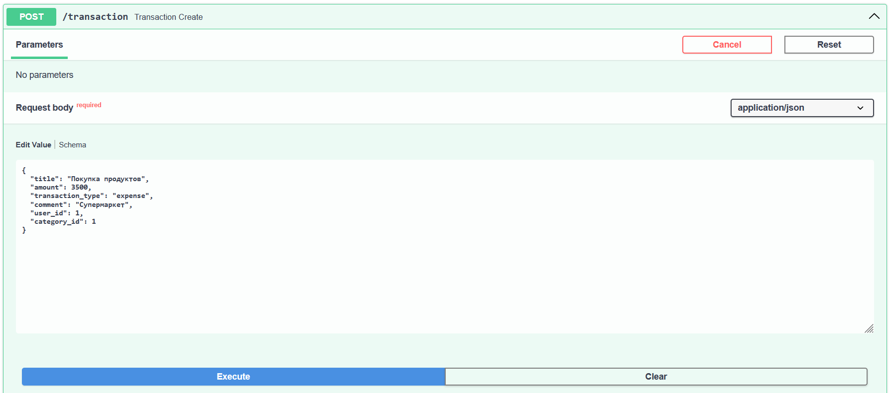
Привязываем транзакцию к тэгу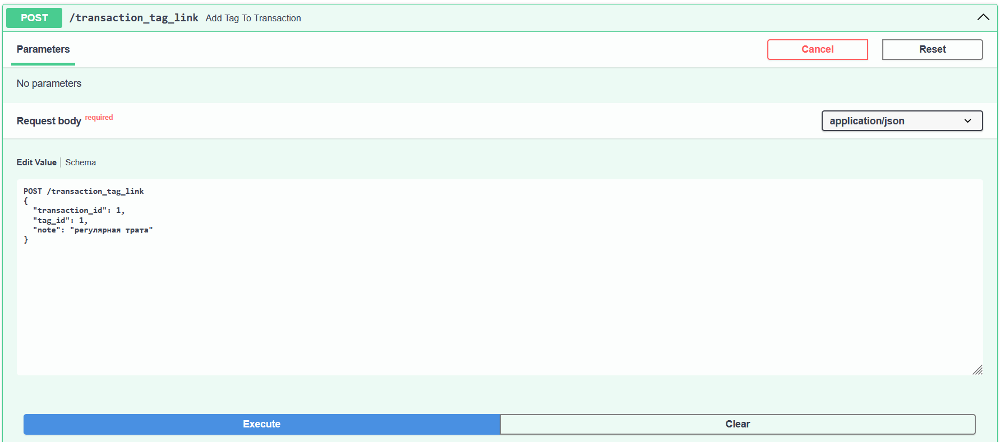
Итоговый json после через get /transaction/{transaction_id}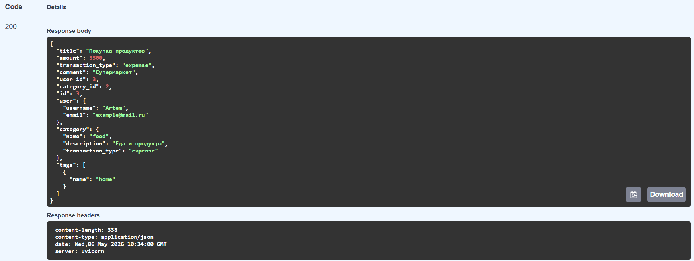
Результат работы
В результате была реализована работа FastAPI-приложения с PostgreSQL через ORM SQLModel.
Данные сохраняются не во временной базе, а в реальной базе данных. Также были реализованы связи one-to-many и many-to-many, CRUD-операции и вложенное отображение связанных объектов при получении транзакции.